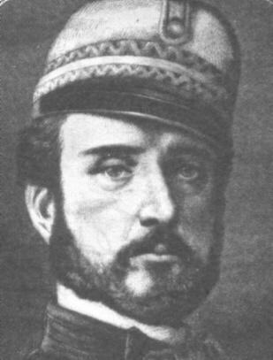
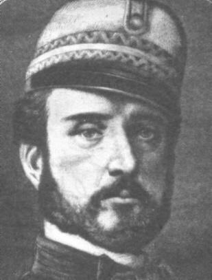

Batalla de Puebla
4 de Mayo

5 de Mayo


 1
1 2
2 3
3 5
5 8
8
Debido principalmente a la cantidad de deudas, , Inglaterra y España subscribieron el Convenio de Londres, por el cual se comprometieron a intervenir por el uso de la fuerza en México para reclamar sus derechos como acreedores, mientras tanto el Presidente Benito Juárez declaró suspendidos los compromisos adquiridos y aplazó pagar la deuda a las naciones europeas. Tras desembarcar en Veracruz, España e Inglaterra aceptaron las explicaciones mexicanas dadas en los Tratados de La Soledad, los cuales tenían como fundamento, el respeto a la soberanía territorial, el reconocimiento de las naciones acreedoras al Estado Mexicano, la entrada al terreno de las negociaciones para llegar a acuerdos en común, que beneficiaría tanto a la República Mexicana, como a los intereses de las potencias invasoras, y por último, se permitiría que los soldados de los tres países se establecieran en las ciudades mexicanas de Orizaba, Córdoba y Tehuacán durante las negociaciones, debido a lo malsano del clima imperante en el puerto de Veracruz; en caso contrario, los soldados de las tres potencias se retirarían a las costas de Veracruz para así comenzar las hostilidades.


La Batalla de Atlixco tuvo lugar el 4 de mayo de 1862 en las inmediaciones de la Hacienda de las Traperas en Atlixco en el estado de Puebla, México, entre elementos del ejército mexicano de la república, al mando de los generales Antonio Carvajal y Tomás O'Horan contra las tropas al servicio del Segundo Imperio Mexicano comandadas por el general José María Cobos y de Leonardo Márquez, compuesta de soldados conservadores mexicanos en apoyo de envío de refuerzos para llevar a cabo la Batalla de Puebla, durante la Segunda Intervención Francesa en México.1 Esta batalla culminó con una victoria republicana y debido a esto el grupo conservador de Márquez no pudo lograr su objetivo de auxiliar a las tropas francesas del Conde de Lorencez en la batalla de Puebla.
PARA MAS INFORMACION CONSULTA ESTOS LINKS:
La batalla de Puebla fue un combate librado el 5 de mayo de 1862 en las cercanías de la ciudad de Puebla, entre los ejércitos de la República Mexicana, bajo el mando de Ignacio Zaragoza, y del Segundo Imperio Francés, dirigido por Charles Ferdinand Latrille, conde de Lorencez, durante la Segunda Intervención Francesa en México, cuyo resultado fue una victoria importante para los mexicanos ya que con unas fuerzas consideradas como inferiores lograron vencer a uno de los ejércitos más experimentados y respetados de su época. Pese a su éxito, la batalla no impidió la invasión del país, aunque sí que sería la primera batalla de una guerra que finalmente México ganaría. Los franceses regresarían al siguiente año, con lo que se libró una segunda batalla en Puebla en la que se enfrentaron 35 000 franceses contra 29 000 mexicanos (defensa que duró 62 días) y lograrían avanzar hasta la Ciudad de México, lo que permitió establecer el Segundo Imperio Mexicano. Finalmente, ante la incapacidad de consolidar un imperio y después de perder 11 000 hombres debido a la actividad guerrillera que nunca dejó de subsistir,1 los franceses se retiraron incondicionalmente del país en el año 1867.
PARA MAS INFORMACION CONSULTA ESTOS LINKS:
Estos fueron los personajes principales de esta batalla:

 
 
Aqui se muestran algunas imagenes de los diferentes monumentos en conmemoracion a la batalla de Puebla